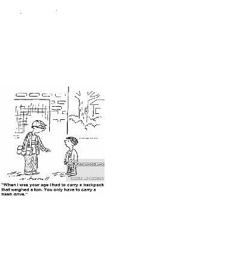

Timothy Jones
My major
My name is Timothy Jones. I cannot honestly say that I have a hometown as my family and I have moved around a lot, mainly in the state of Texas. So I would just have to claim Texas as my home state. I have lived in every part of Texas, West Texas, North Texas, East Texas, South Texas and every where in between.
My major is Data Science, although I do have multiple degrees in various areas. Business, Occupational Therapy and my latest degree being in Biology.
I have 10 siblings and yes to answer the common question, all from the same parents. My mother has a Masters Degree in English and my father, who has not been in the picture for quite some time, has Dual Master Degrees in English and History. The majority of my family lives in the southern United States, Oklahoma and Texas. I am the only one to venture to North Dakota and I am proud to call it home. My mother raised my siblings and me to be very independent individuals and did not only accept us going to school to be educated, but also was very strict about teaching more at home. My mother encouraged us to read and to also learn more and more about anything that may interest us. As children we enjoyed a lot of ups and a lot of downs. There are benefits and drawbacks being a family that large. I, of course, currently attend UND and I am 39 years old.
